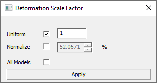
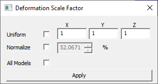
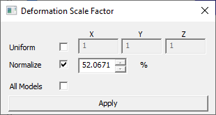
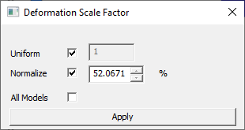
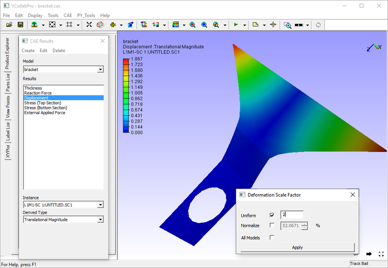
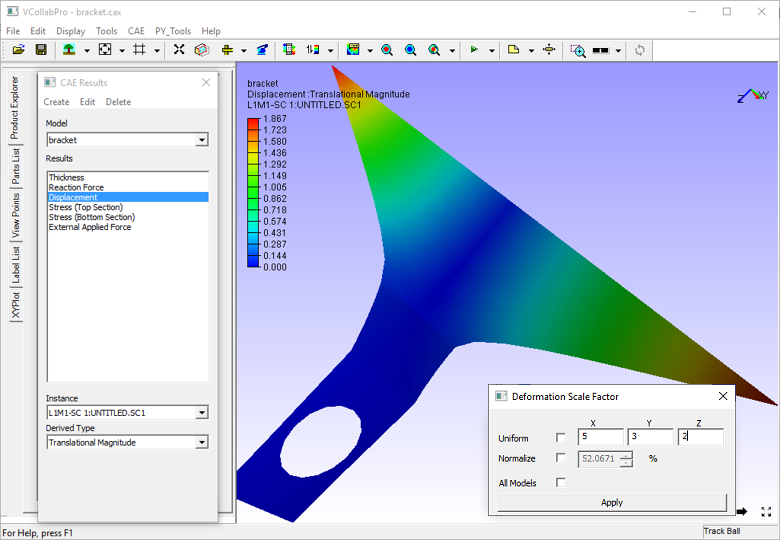
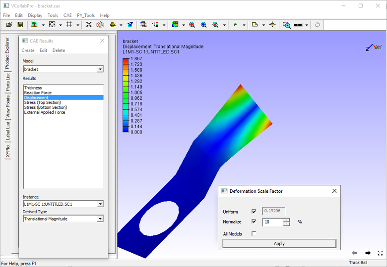
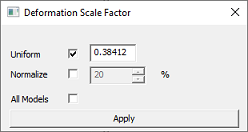

Deformation Scale Factor
The Scale Factor option (within CAE Menu) enables the user to scale CAE deformation of the model so that the deformation is visible and easy to understand.
Existence of deformation is not found when deformation value of a node is,
- Very large compared to other nodes. In this case the user may not be able to identify what collapsed the model
- Very small. In this case, the user may not be able to identify much difference in the deformation of the model.
Scale factor option helps to understand the deformation in the above cases.
Deformation Scale Factor Panel

The various fields and options available in the Deformation Scale Factor panel are explained below.
Uniform By checking this option,the scale value entered by the user will be applied to all X, Y and Z directions. Normalize With this option, a user can scale up/down in terms of model bounding percentage. By default, deformation is scaled to 10% of model bounding radius. The actual scale factor is updated according to the scale percentage. All Models Applies Scale factor to all CAE models. Apply The modified scale factor will be applied to deformation. Deformation is normalized (max - normalization) and mapped with model bounding sphere radius.
By default normalized deformation is scaled to 10 percent of bounding sphere radius.
To apply true scale, check Uniform option and set the scale factor as 1.
Uniform means, constant scaling in X,Y and Z directions.
if Uniform option is unchecked, the dialog shows its X, Y and Z factors as below. here scaling will vary in each direction.

Note
- If the model is one or two dimensional, check Uniform option for better visualization of deformation.
- If more than one model exists, any change in scale factor is applicable to the current model.
Steps for scaling a model uniformly
Click CAE | Scale Factor to open the Deformation Scale Factor dialog.

Check the Uniform option, which provides modified dialog as below.

Enter a different scale value, say 2 in the edit box.
Click Apply and observe the scaled deformation in the viewer.

Steps for scaling a model in each axis
Click CAE | Scale Factor to open the Deformation Scale Factor dialog.
Enter different scale values for each axis in the corresponding edit boxes.
Leave the Uniform and Normalize checkboxes unchecked
Click Apply and observe the scaled deformation in the viewer as below.

Steps for scaling deformation for Mode case animation data
Load a mode case CAX file.
Click CAE | Animate.
Click CAE | Scale Factor
In the Deformation Scale Factor panel, check the Normalize option, enter 10 percent and apply.

Change the value to 20 % and click apply.
Notice the change.
Uncheck Normalize option.

Usual scale factor option will be enabled. Enter 1 and click apply for true scale.